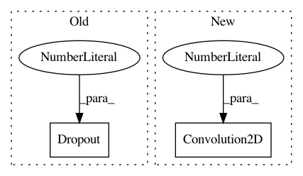

64ff88344402771c2735dbcacf7010acfeb55b0a,ann_architectures/cifar10/noise.py,,,#,24
Before Change
model.add(Convolution2D(64, 5, 5, border_mode="same"))
model.add(Activation("relu"))
model.add(GaussianNoise(sigma))
model.add(Dropout(0.25))
model.add(AveragePooling2D(pool_size=(3, 3), strides=(2, 2)))
model.add(Convolution2D(64, 3, 3))
After Change
model = Sequential()
model.add(GaussianNoise(sigma, input_shape=(3, 32, 32)))
model.add(Convolution2D(32, 3, 3, border_mode="same"))
model.add(BatchNormalization(axis=1))
model.add(Activation("relu"))
model.add(GaussianNoise(sigma))
In pattern: SUPERPATTERN
Frequency: 3
Non-data size: 2
Instances
Project Name: NeuromorphicProcessorProject/snn_toolbox
Commit Name: 64ff88344402771c2735dbcacf7010acfeb55b0a
Time: 2016-10-09
Author: bodo.rueckauer@gmail.com
File Name: ann_architectures/cifar10/noise.py
Class Name:
Method Name:
Project Name: tensorflow/cleverhans
Commit Name: f3a561d2607d05cf3177d2f7a4c9783033e02c76
Time: 2016-11-07
Author: goodfellow.ian@gmail.com
File Name: cleverhans/utils_mnist.py
Class Name:
Method Name: model_mnist
Project Name: oarriaga/face_classification
Commit Name: 4ca83a3646f5e83a3bd104c408acdb906dd4952c
Time: 2017-05-05
Author: arriaga.camargo@gmail.com
File Name: src/models.py
Class Name:
Method Name: simple_CNN